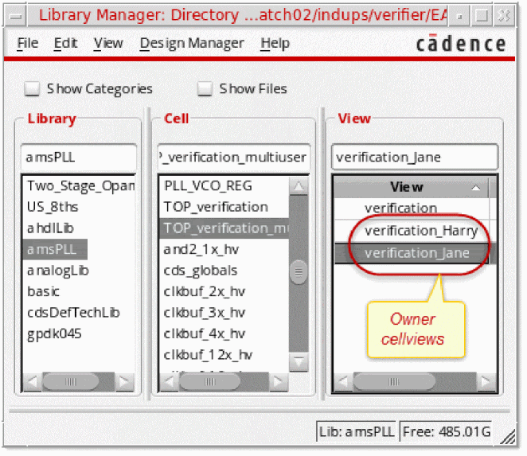

3
Using Advanced Verifier Features
This chapter demonstrates the advanced features of Virtuoso ADE Verifier (Verifier) that are not described in Chapter 2, “Performing Basic Verification Flow Tasks.”
This chapter includes the following topics:
- Exporting and Including Requirements
- Setting Custom Fields
- Including Implementations and Adding their Requirements
- Overriding the Job Policy
- Using Monte Carlo Sampling
- Signing Off Failed and Manual Requirements
- Setting Requirements for External References
- Setting Preferences
Exporting and Including Requirements
This section details the following tasks.
- Task 1: Export Requirements
-
Task 2: Include Requirements by Reference or Copy
To export the verification plan:
-
Choose File — Export — CSV.
The Export Requirements to CSV File form displays. -
Specify the name and location of the
.csvfile. - Specify the details to export.
- Click Save.
Verifier exports the requirements hierarchy to the specified file.
|
|
You can include requirements in Verifier from the following sources:
Including requirements is typically the first step in a top-down verification flow.
For information on adding a requirement manually, see Task 4: Add and Move a Requirement in Chapter 2, “Performing Basic Verification Flow Tasks.” For information on creating a requirement from an implementation, see This task includes the following parts:
Part 1: Start a new Verifier session and include the requirements stored in
Part 2: Save the cellview as Part 3: Remove the referenced requirements from the cellview.
Part 4: Include the same requirements in Part 5: Analyze the difference between the referenced and copied requirements. |
Part 1: To include requirements from by copying them in a Verifier session:
- Choose Tools — Import and select CSV or Excel. The Include form displays.
- Specify the required information as described in the procedure to include requirements from an external source. Ensure that you choose Copy in the Operation group box.
-
Click OK.
-
Select the source type.
For this task, select CSV File. -
Specify the source.
For this task, specify themyPlan.csvand its location in the File Name field. -
If the source is a CSV file or a Microsoft Excel file, do the following:
-
If your source is a Microsoft Excel file with multiple sheets, specify the sheet that contains the requirements you want to import. For this, click Get Sheets and select the sheet name or All, as required.
Try working withamsPLL_TOP_verification2.xlsxin theVerifier_Example_Filesdirectory. -
In the Number of Rows to Be Ignored group box, specify the top and bottom rows that must be ignored. For example, if the source file includes column headers in the first row that Verifier must ignore when including requirements, specify
1in the Top rows field. -
Set the Header Columns group box as described below.
To use the requirement column definitions from the source file, click Get header definition from row and specify the header row number. Ensure that the headers in the source use the following text. The mandatory header isTitleParent,ID,Title,Type,MinSpec,MaxSpec,Unit,Owner,Description
For this task, click Get header definition from row.
To map the source columns to the Verifier requirement columns, do the following.
1. Click Map source columns to Verifier requirement headers.
2. In the Number of Columns to be Loaded group box, specify the number of columns you want to import. The column mapping table in the Header Columns group box updates accordingly.
3. Map the columns in the source file to the Verifier requirement columns. You can change the sequence of the columns based on the sequence in which they exist in the source file. For example, if the third column in the source file is the description instead of the title, select Description under 3.
You can merge multiple cells by assigning the same target to multiple columns. For example, if the columns 10 and 11 of the file contain information that you want to add as the description of the included requirements, assignDescriptionto both these columns.
Note: The hierarchy number (Hier) is auto-assigned by Verifier and is not part of the import process.
Note: It is possible that the source file does not have separate parent requirement and ID columns. Instead, the file can use a path-type ID, such asAVP.OPAMPto indicate thatAVPis the parent ofOPAMP. In this case, ignore theParentandIDmapping and setidHierDelimiterto specify the delimiter character to determine the hierarchy. Verifier uses this delimiter to determine the hierarchy level and the ID. -
Select Get Column From File to view some rows in the source file to ensure that you have specified the correct file and mapping details. The number of rows that will be shown in this field is Top rows +
1.
-
If your source is a Microsoft Excel file with multiple sheets, specify the sheet that contains the requirements you want to import. For this, click Get Sheets and select the sheet name or All, as required.
- Click OK.
The specified data is included in the Verifier session. The first node in the requirements hierarchy represents the source file.
For this task, you must include the requirements stored in myPlan.csv by reference. Now analyze how you can work with the requirements included by reference. Note down your observations.
- Click File — Save As or click the Save As icon on the toolbar.
-
Specify the library, cell, and view. For this task, specify
amsPLL/TOP_verification/myVerifierCellview. -
Click OK.
Part 3: Remove the requirements you included by references
- Right-click the referenced requirement and click Delete Requirements.
- The referenced requirements are removed from the cellview.
Part 4: Include the requirements by referencing them in the cellview
-
Choose Tools — ADE Verifier from Virtuoso CIW window.
The form Choose Verifier Cellview for the Verifier Setup displays. - Specify the required details.
- The cellview opens.
-
Choose File — Import — Verifier Cellview.
The Import Verifier Cellview form displays. -
Specify the import operation.
- Click Copy if you want to include the requirements by copying them in the Verifier setup. The requirements will be copied in edit mode, without any links to the source.
- Click Reference if you want to include the requirements by reference. The requirements will be added as read-only entries. You must maintain the source to ensure that the reference links do not break.
For this task, click Reference. -
Click OK.
The external cellview is added to the current cellview as a reference with the type ExtRef.
Part 5: Analyze the difference between the requirements included by reference and copy
The following table describes some observations.
|
|
|
|
|---|---|---|
|
Edit the requirements in the source file and update data available to Verifier. |
Can edit directly in the requirements hierarchy and using requirement editor. Because the copied requirements have no link with the source, changes in the source are not reflected in Verifier. |
|
|
Cannot delete requirements in Verifier. Delete the requirement in the source file and update data available to Verifier. |
||
|
Cannot map with implementations. Can highlight requirement–implementation mappings, if the mapped requirement and implementation are visible. Edit or delete the mappings in the source file and update data available to Verifier.
If the referenced requirements are mapped elsewhere, as done in designer cellviews, then their mapping cannot be changed locally. For details, see “Setting Requirements for External References”.
|
Can map with implementations that are not referenced. Can remove the mappings if implementations are not referenced. |
|
|
Cannot add additional requirements manually or from a CSV or Excel file. You cannot add requirements from a cellview. |
Can add additional requirements manually or from a CSV or Excel sources. |
Setting Custom Fields
This section details the following tasks:
- Task 3: Prepare the Verifier Environment to Use Custom Fields
-
Task 4: Use the Custom Fields
Before you set Verifier to start using your custom fields, determine if you want different custom fields for the project and its requirements. This task considers that you want different custom fields. Therefore, the task uses two.csvfiles, one for the custom project fields and one for the custom requirement fields. If your custom fields are common for the project and its requirements, you can use a single.csvfile.
To prepare the Verifier environment for incorporating your custom fields
-
Specify the custom field tags, names, and tool tips in the
.csvfiles for the project and requirements. Use the following format:
Field tag name,Field tag description,Field tool tip
See the following examples: -
Set the Verifier environment variable
customFieldConfigandcustomReqFieldConfigto indicate the.csvfiles of the custom project fields and the custom requirement fields, respectively.
You can loadsetCustomField.ilin theVerifier_Example_Filesdirectory to set the variables. For this, run the following command in Virtuoso CIW.
load("./Verifier_Example_Files/setCustomField.il")
Alternatively, you can set the variables in the.cdsenvor.cdsinitfile, or from Virtuoso CIW. The following snippet illustrates how you set these variables in the.cdsinitfile stored in the root directory of your project.
The filename and location entry of the.csvfiles can contain the character~for user home directory, and$UNIX_environment_variable for the value of an environment variable.envSetVal("verifier.customFieldConfig" "csvfile" 'string "~/infoProject.csv")
envSetVal("verifier.customReqFieldConfig" "csvfile" 'string "~/infoReq.csv")
- After you have prepared the Verifier environment, the custom fields become available to the Verifier sessions. The custom project fields are available in the Virtuoso ADE Verifier Preferences form. The custom requirement fields are available in the requirement editor.
-
You set the value of the custom fields in a Verifier session. These values are saved in the Verifier cellviews.

Task 4: Use the Custom Fields Reopen the cellview
amsPLL/TOP_verification/myVerificationCellviewand set the values of the custom project fields and the custom requirement fields.
To set the values of the custom project fields
-
Choose Edit — Preferences.
The Virtuoso ADE Verifier Preferences form displays. -
Click the Custom Data tab.
The custom fields display in a table.The Custom Data tab becomes available when you set the Verifier environment variable customFieldConfig. -
Double-click the Value cell of a custom field and type the value.
Repeat this step to specify the value of the remaining custom fields.

- Click OK.
You can save your changes in the cellview.
To set the values of the custom fields of a requirement
- Click the Setup tab, if it is not the current tab.
- Select the requirement.
-
Click the requirement editor button on the toolbar. Alternatively, choose Edit — Open Requirements Editor.
The requirement editor displays the custom fields in the Custom Requirement Data area, as illustrated in the following figure.The Custom Requirement Data area becomes available when you set the Verifier environment variable customReqFieldConfig. -
Double-click the Value cell of a custom field and type the value.
Repeat this step to specify the value of the remaining custom fields.
You can save your changes in the cellview.
Including Implementations and Adding their Requirements
This section details the following tasks:
- Task 5: Include Implementations from Other Cellviews
- Task 6: Create Requirements from Implementations
To include the implementations of another cellview in the current setup
-
Choose File — Import — Verifier Cellview. The Import Verifier Cellview form displays.
- Select the source cellview in the Cellview area.
-
Click Copy to copy the data from the source cellview.
Click Reference to include the implementations by reference. -
Select Implementations and Mappings.
If you want to include the requirement from the source cellview, select Requirements. - Click OK.
The implementations are included in the current Verifier session. The mapping information is passed on with the included implementations in the destination cellview, provided the corresponding requirements exists. You can save the cellview.
To include multiple implementations in a Verifier setup
-
Choose Tools — ADE Verifier.
The form Load Initial Data for the New Verifier Setup displays. -
Choose Tools — Add Implementation Cellviews.
The Add Implementation Cellviews form displays. -
Specify the necessary information to add multiple implementations:
- Select the library that contains the implementation cellviews.
- Select the cellviews you want to add as implementation cellviews.
- Select Create Requirements to create the requirements corresponding to the implementations. The implementations are also mapped with the corresponding requirements. You can specify the tests and outputs for which requirements must be created.
- Click OK.
Based on the specified information, Verifier adds the implementations, and optionally mapped auto-created requirements.
|
Instead of deleting the requirement, try removing the mapping. For this, right-click the requirement or implementation and choose Delete Mapping. |
To create a requirement from an implementation
Verifier created a requirement mapped with the implementation at the end of the requirements hierarchy. You can change the hierarchical position of the new requirement as needed.
|
|
You can create requirements from multiple implementations. For this, select multiple implementations, right-click, and choose Create Requirements. |
After investigating the feature to add multiple implementations and creating requirements from implementations, you can close the Verifier setup without saving it.
Overriding the Job Policy
|
|
Verifier uses the default job policy of the implementation cellview application for running the implementation cellview simulations. |
To override the default job policy
-
Choose Edit — Preferences.
The Virtuoso ADE Verifier Preferences form displays. -
Click the Run Options tab.
- Select the job policy you want to use from the drop-down list in the Override Implementation Run Job Policy area.
-
Click OK.You can define the job policy in ADE Assembler and ADE Explorer and select it in the Virtuoso ADE Verifier Preferences form.

Open the Virtuoso ADE Verifier Preferences form and explore other options that you can set globally.
Using Monte Carlo Sampling
Observe the outputs of an implementation cellview whose run mode is Monte Carlo Sampling
-
When an implementation cellview is set to use the Monte Carlo Sampling run mode, the following sections display in Verifier:
- Output Values: This section displays the outputs, with values, of the tests in the implementation cellview.
- Statistical Values: This section displays the yield, mean, standard deviation, and CPK of each output measurement of the tests in the implementation cellview. It also shows the overall yield of each test.
You can map Monte Carlo outputs and statistical values with requirements. Ensure that the requirements that are mapped to Monte Carlo statistical values have specifications. Otherwise, the specification checks fail.The specification values used for Monte Carlo statistical parameters are different from the output specification values in ADE Assembler or ADE Explorer. For example, consider that you have a specification value ofDCGainas>10in ADE Assembler. Your Monte Carlo simulation can provide you a yield measurement of98%forDCGain. The specification value specified in Verifier for such statistical parameters reference the statistical values. This means that a specification value of minimum0.97for the requirement mapped toDCGain::Yieldwill ensure that the requirement passes.
To change the run mode of an implementation cellview and observe the changes in outputs
-
Right-click the implementation cellview and choose Edit Implementation Cellview.
The cellview opens in ADE Assembler. - Change the run mode to Single Run, Sweeps and Corners, save and close the cellview in ADE Assembler.
-
Observe the changes in the outputs in Verifier.
Verifier now shows the outputs relevant to the current run mode. Also, the mappings are removed.
Reset the run mode to Monte Carlo Sampling and restore the mappings. You can manually map the requirements with the statistical values and outputs.
Signing Off Failed and Manual Requirements
This section details the following tasks.
To sign off a failed requirement
-
In the Results tab, right-click the failed requirement and select Sign off.
The Sign Off form displays. - Type a name in the User Name field.
-
Type details of the signoff, such as the reason, in the Comments field.
You can specify the valid period of the signoff from the Lifetime of Signoff drop-down list. The available options are: -
Click OK.
The status of the requirement changes to Signed Off.

After signing off a requirement manually, select it and review its details in the Information area of the Results tab screen. Also, note the increment in the overall progress percentage.

Task 10: Sign Off a Requirement of the Type Manual The verification type of
1.4.6inamsPLL/TOP_verification/verificationis set as Manual. Mark this requirement as verified and passed.
To sign off a requirement whose goal type is Manual
-
In the Results tab, right-click the requirement and select Manual Signoff.
The Verifier Signoff form displays. -
Type a descriptive signoff title in the Name field.
This name is populated in the Owner field. - Specify the lifetime of the signoff.
- Type the details of the signoff, such as the reason, in the Comments field.
- Click OK.
The signed-off failures of requirements of the type Manual are also documented in the verification reports.
Setting Requirements for External References
This section details the following tasks.
- Task 11: Understand How Verifier Supports Multiple External References
- Task 12: Set Owners for Requirements
-
Task 13: View the Mapped Implementations from the Designer Cellview in the Master Cellview
The following figure illustrates how you can manage a design verification project with multiple requirement owners.

Assuming that you are the project manager, you typically follow these steps for managing a verification project with multiple designers:
- Add requirements to the master Verifier cellview of your verification project.
-
Add owners of requirements.
Notes:- The default owner of a new top-level requirement is the current Verifier user name. The default owner of a new sub-level requirement is the same as the owner of its parent requirement.
- You can set the requirement–implementation mapping of a requirement if you are the owner of that requirement. You typically use Verifier as the assigned requirement owner for defining the mappings. If you want to use Verifier as another user, choose Edit — Preferences, and set the user name in the Current User Name field.
- If a requirement is without an owner and has been mapped to an implementation, you cannot specify its owner. In this case, you can delete the mapping and then specify the owner.
- Specifying an owner for a requirement has no impact on the verification status. The Owner name is specified only to assist in the identification of the designers currently working on a requirement.
-
Designers add implementations in their own cellview and map them with their requirements. Designers can also run simulations and monitor the verification status of the requirements they own.
By default, designer cellviews display only the local requirements. Designers can add local requirements in their owner cellviews. -
You, as the verification project manager, can review and run the implementations added by designers from the master cellview.
The master cellview includes the implementation information set in the designer cellviews through reference. You can monitor the verification status of all the requirements local to different designers.
After you create the new requirement, the default owner of that requirement is Tom. This is because the current user of the master cellview is Tom.
To set an owner for a requirement, do one of the following
-
Select the requirement, click the Owner field, and type the name of the requirement owner.
For this task, type
Janeas the owner of the new requirement. Consider that the new requirement is2. - Choose Edit — Open Requirement Editor and specify the owner in the requirement editor.
- Select requirements, right-click, choose Set Owners for Selected Requirements, type the owner, and click OK. Use this method to set the same owners for multiple requirements.
To open an owner cellview from Library Manager
- Choose Tools — Library Manager from Virtuoso CIW to launch Library Manager.
- Select the library and cell.
-
In the list of views, identify the owner cellview. The default format is masterView_ownerName.
 -
Double-click the owner cellview you want to open.
For this task, open the owner cellview ofJane.
The owner cellview has the requirement 2 that you added and assigned to Jane.
To add an implementation cellview in the owner cellview
-
Click Add Implementation in the Implementations pane of the Setup tab.
The selection form displays. -
Select the implementation cellview.
For the task, selectamsPLL/PLL_VCO_320MHZ_tb/maestro. -
Click OK.
If the selected cellview has multiple histories, select the history. - Click OK.
The implementation cellview is added.
To verify if the master cellview contains implementations and mappings set in owner cellviews:
-
Open the master cellview.
For the task, openamsPLL/TOP_verification_multiuser/verification. -
Check the presence of the implementations and mappings that were set in the owner cellviews.
The referenced cellview name appears in bold italic text.
Setting Preferences
-
Choose Edit — Preferences.
The Virtuoso ADE Verifier Preferences form displays.
Review the options in each tab. - Set your preferences as required.
- Click OK.
This tutorial includes useful information on setting preferences for various purposes, which are listed below. You can explore and use other preference options available through the Virtuoso ADE Verifier Preferences form.
- Set the specification search order.
- Specify the current user name.
- Retain mapping information when a requirement is renamed.
- Set Verifier to run multiple simulations in parallel.
- Specify a user-defined directory to store run summary data.
- Set Verifier to not resimulate an implementation when no changes were made.
- Set Verifier to display HTML reports in the default web browser.
- Set the batch run options.
- Set Verifier to use a specific job policy.
- Set custom fields for the project and its requirements.
- Set the time interval between implementation change checks.
Return to top